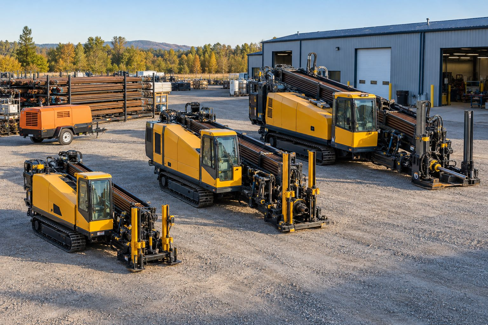

Minimum yüzey etkisi
Giriş ve çıkış noktası dışında yüzeye dokunulmaz.
Hizmetlerimiz · 07

Kazısız Teknoloji Uygulamaları
Yüzeydeki trafik, peyzaj ve günlük yaşam üzerindeki etkiyi azaltan kazısız altyapı teknolojileri.
Kazısız teknolojiler (trenchless), altyapı hatlarının yüzeyi açmadan yer altından geçirilmesini, yenilenmesini veya onarılmasını kapsayan yöntemler bütünüdür. Yönlendirilebilir yatay sondaj, boru sürme ve yatay delgi bu ailenin en yaygın üyeleridir.
Yiba, projenin zemin, mesafe ve hat gereksinimlerine göre en uygun kazısız yöntemi belirler; böylece hem süre hem de sosyal maliyet en aza iner.
Neden Yiba?
Giriş ve çıkış noktası dışında yüzeye dokunulmaz.
Daha az hafriyat, gürültü ve emisyon.
Açık kazıya göre çok daha hızlı tamamlanır.
HDD, boru sürme veya delgi: projeye göre karar.
Sık sorulan sorular
Çoğu projede uygulanabilir; uygunluk zemin, mesafe ve hat türüne göre keşifte değerlendirilir.
Doğrudan maliyet yakın olsa da trafik, yüzey onarımı ve süre kayıpları hesaba katıldığında toplam maliyet genellikle daha düşüktür.
Zemin yapısı, geçiş uzunluğu, boru çapı, kot hassasiyeti ve saha erişimi birlikte değerlendirilir.